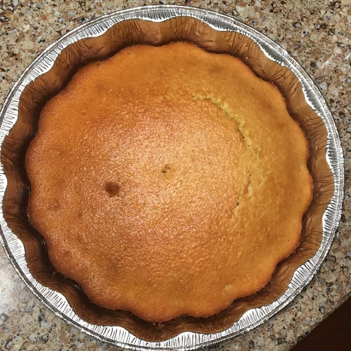

Golden Sweet Cornbread

Want an amazing appetizer or dessert? You have to make this wonderful cornbread!
Ingredients Needed:
- 1 Cup All-Purpose Flour
- 1 Cup Yellow Cornmeal
- 2/3 Cup White Sugar
- 1 Teaspoon Salt
- 3 1/2 Teaspoons Baking Powder
- 1 Egg
- 1 Cup Milk
- 1/3 Cup Vegetable Oil
Instructions to Make this Dish:
- Preheat the oven to 400 degrees F (200 Degrees C).
- Spray or lightly grease a 9 inch round cake pan.
- Mix flour, cornmeal, sugar, salt, and baking powder. Stir in egg, milk and vetetable oil untill well combined
- Pour batter into prepared pan.
- Bake in oven for 20 to 25 minutes. Insert a toothpick into the center into it comes out clean.
- Enjoy.